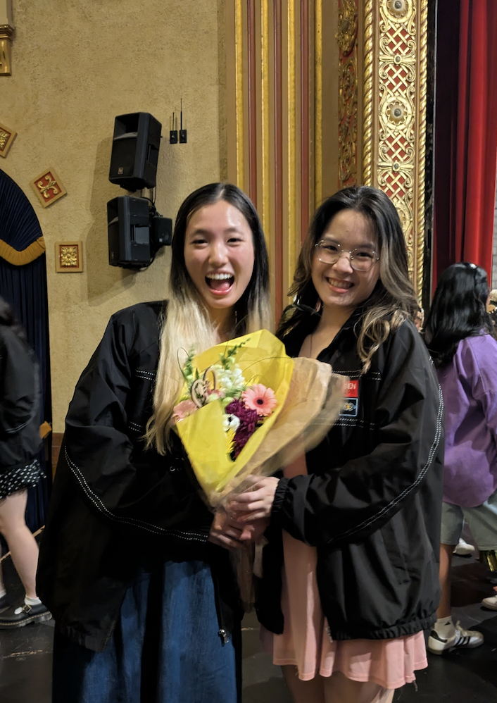
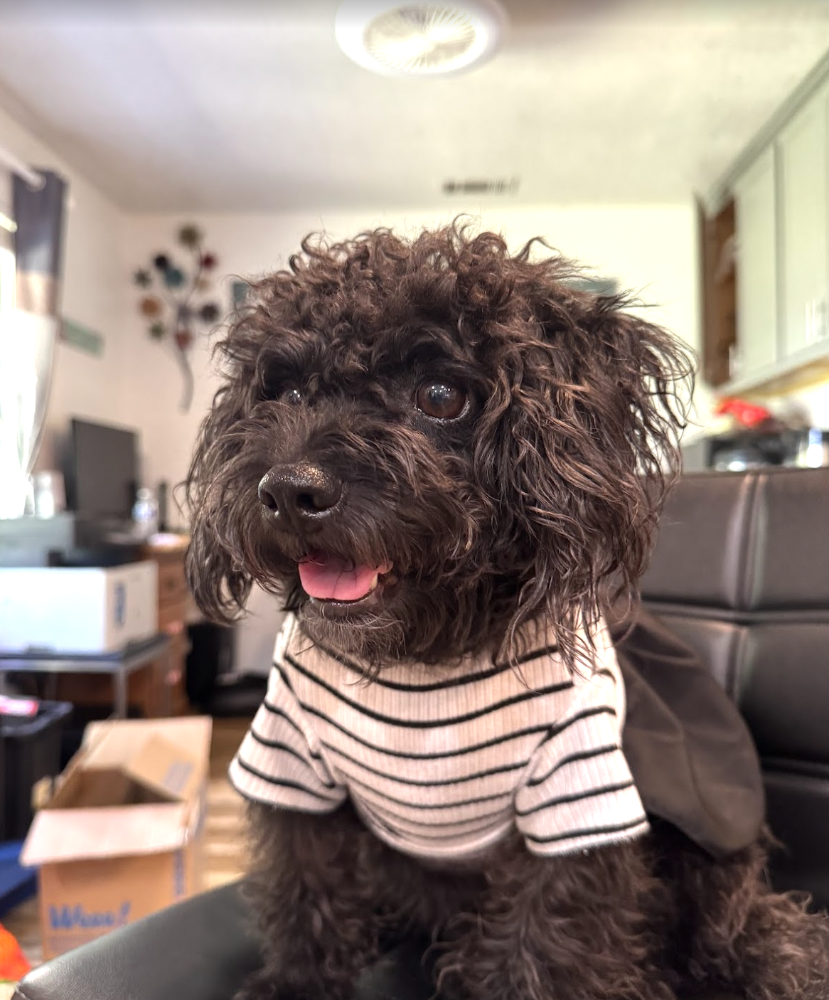
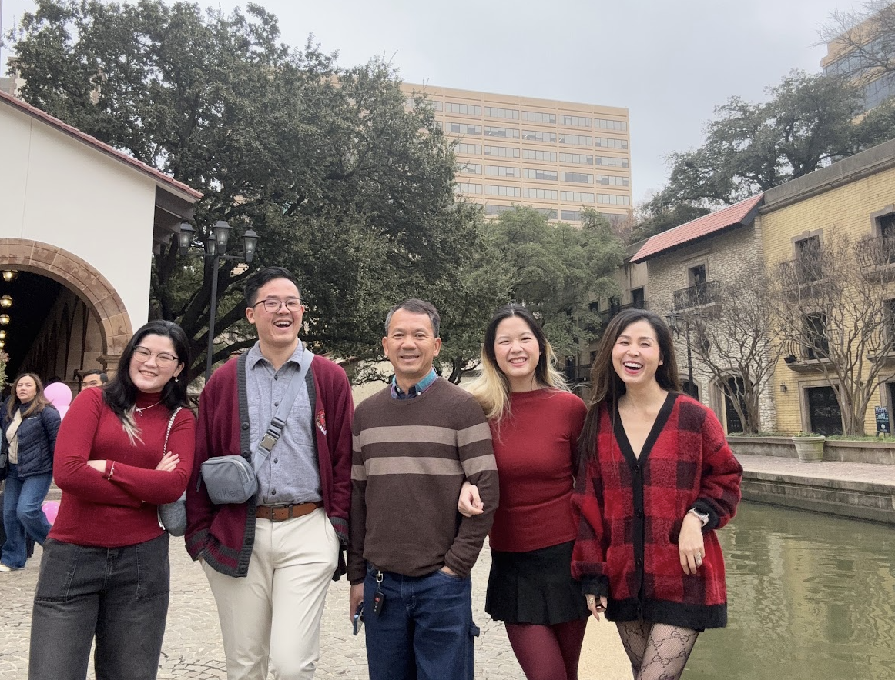

- Brewing matcha...
- Warming your seat...
- Setting the vibe...
- Laying out the menu...
- Your table is ready ✨

Hi, I'm
Victoria Nguyen
Software Engineer & Product Thinker
University of Michigan
From AI in healthcare to behavioral design platforms, I build things that are intentional, human, and worth using.






Welcome to my journey!
My Motto: To create technology that takes ideas beyond concepts and into people’s heart.
Currently a CS + Entrepreneurship student at the University of Michigan, I am striving to turn ideas into intentional, scalable systems, to create technology that moves beyond concepts and into people’s everyday lives, where it can make a meaningful, lasting impact.
BACKSTORY
I didn’t start in tech — I started around people.
Being in clinical environments, I saw how individuals could spend days, even months, stuck in systems that didn’t fully work for them — waiting for answers, being overlooked, and navigating something much bigger than themselves.
That experience changed how I think about impact.
Helping people one-on-one wasn’t enough if the system itself was broken.
So I chose software. I didn't just want to build, I wanted to create change at scale.
WHY I BUILD
Technology gives ideas reach.
It allows something small — a thought, a frustration, a “what if” — to become something real that people can rely on in their daily lives.
I’m driven by that transformation.
Not just building products, but building systems that feel intuitive, accessible, and genuinely useful.
PRINCIPLES
Build from reality, not assumptions.
Execution matters more than intention.
Go beyond usability — prioritize accessibility and clarity.
Build things that scale and create lasting impact.
HOW I WORK
I work at the intersection of systems, design, and storytelling.
I’m collaborative when building with others, but I’m also comfortable taking ownership and pushing ideas forward independently.
My process is iterative and intentional:
Concept → Design → Build → Test → Iterate → Expand
I move quickly — not just to ship, but to learn, refine, and make something better.
LOOKING FORWARD
I don’t want to be defined by one industry.
I want to be someone who creates — across spaces, across problems, wherever there’s an opportunity to improve how people live.
At the core of everything I do:
I take ideas and make them real — at a scale bigger than myself.
Serving: unlimited
Hover a project to see relevant skills.✨
Featured Work
Click a project to explore the full case study 🍽️
Hopper
Jan 2026 - Apr 2026Study Space discovery. Observational research. Defined product features and design. Metric tracking.
BetBuddies
Sep 2025 - Apr 2026Social accountability platform. Interviews. Combines financial stakes with peer pressure to sustain habits.
SynthLab
Dec 2025 - Feb 2026Privacy-preserving synthetic data for pediatric healthcare. Multi-method generation, statistical validation, fairness testing.
betterSchedule
Sep 2025-Dec 2025Academic scheduling platform redesign from user interviews. Adaptive time-blocking, syllabus sync, smart prioritization.
Heartline Care Companion
Nov 2025 - Dec 2025Wellness mobile app designed around hospital care routines. Gentle reminders, mood check-ins, adaptive UI.
Smart Record App
Nov 2025 - Dec 2025Clinical documentation tool for care team onboarding. Walks through vitals flows and patient decision points.
My Story
Engineering, design, and community care 🗺️
Gametime United
Full-Stack Software Intern
Michigan Medicine — Department of Computatonal Biology
Research Assistant
- Defined product requirements for a conversational AI interface enabling scientists to query DNA binding predictions
- Architected a FastAPI middleware layer connecting React interfaces with transformer-based genomic models
- Partnered with PhD researchers to convert ML outputs into interpretable product features
- Drove iterative feature development through structured researcher feedback cycles
Tools: Python · FastAPI · React
Michigan Medicine - Department of Pediatrics
Research Assistant
- Built Python data pipelines to clean and standardize large behavioral datasets
- Eliminated data loss and recovered 15+ hours of manual work per week.
- Achieved 90%+ inter-rater reliability in Observer XT behavioral coding
- Analyzed 60+ pediatric feeding interaction recordings to extract structured behavioral metrics
Tools: Python · Pandas · NumPy · ObserverXT · Data Analysis
Michigan Medicine University Hospital
Nursing Assistant II
- Monitored vitals and managed 30+ central lines/drains per shift, providing insight into EMR workflows and clinical data requirements
- Coordinated care documentation across departments using EMR/EPIC systems
- Demonstrated an ability to handle complex, high-stakes information similar to managing code and system data.
- Collaborated with interdisciplinary teams in high-acuity environments, strengthening systems thinking and communication
Tools: Epic EMR · Clinical Documentation Systems · Patient Services · Critical Care
Eastern Michigan University - UROP Program
Research Assistant
- Collected survey data and performed analysis with Excel
- Contributed to writing over 2 research summaries and articles on community health and data representation
- Created and translated over 10 community event flyers using Canva and collaborated with CMS Navigator initiatives
- Presented a project on Firearm Ownership at the U-M 2025 Spring Symposium
Tools: Survey Analysis · Excel · Canva · Community Research
Trinity Health
Medical Assistant
- Streamlined workflow and productivity by 30% and reduced average patient waiting time by 15%
- Assisted clinicians with lab work, recording vitals, and procedures
- Contributing to improved patient care through accurate documentation and reliable data handling
Tools: Epic EMR · Clinical Documentation Systems · Patient Services · Laboratory
Community & Leadership
Production Chair @ GenAPA
- Directed 10+ promotional and showcase videos for UM's annual GenAPA cultural showcase
- Led a cross-functional creative team across filming, editing, and production logistics
- Coordinated with org leadership to align storytelling with cultural programming goals
- Managed production timelines and creative direction from concept through final cut
Advisory Board @ UM Depression Center
- Advise on student-facing wellness programming and peer support initiatives
- Contribute to evaluation of digital engagement tools and outreach strategy
- Represent student perspectives in program development and research alignment
- Bridge clinical and community voices to improve resource accessibility
Small Group Leader @ AsAmHSC
- Mentored high school students through weekly small group sessions on identity, culture, and belonging
- Facilitated conversations on mental health and self-advocacy in academic environments
- Developed session curriculum and activities focused on college readiness and goal setting
- Built trust-based relationships that supported students through key transition periods
Let's build something together
Whether it's a product idea, collaboration, or just a matcha-fueled conversation — I'm always open to good work.